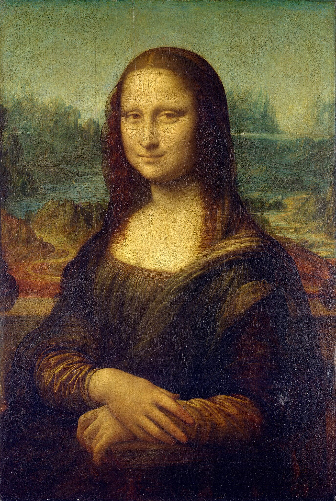
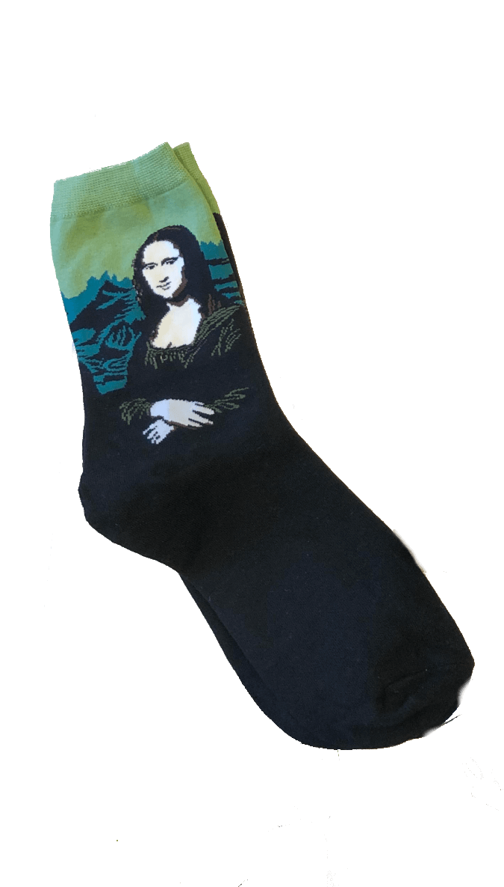
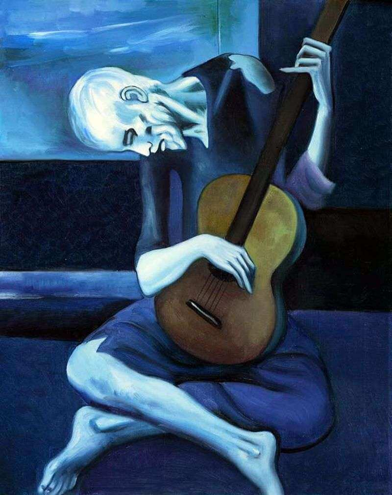
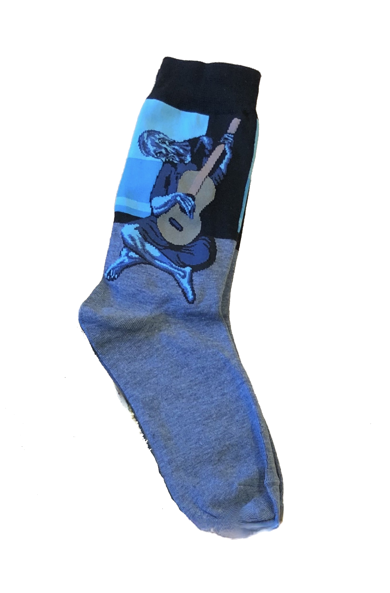
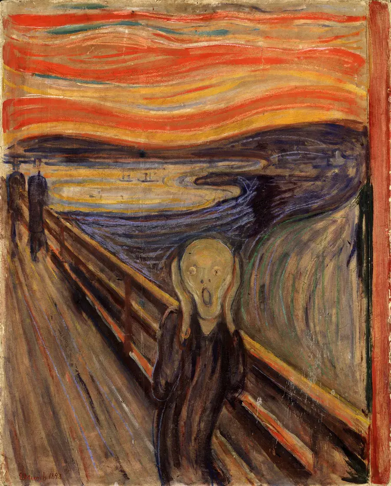
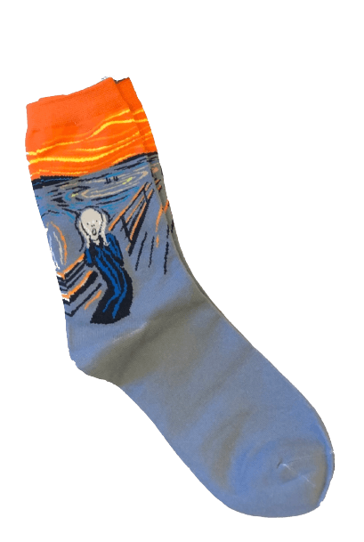
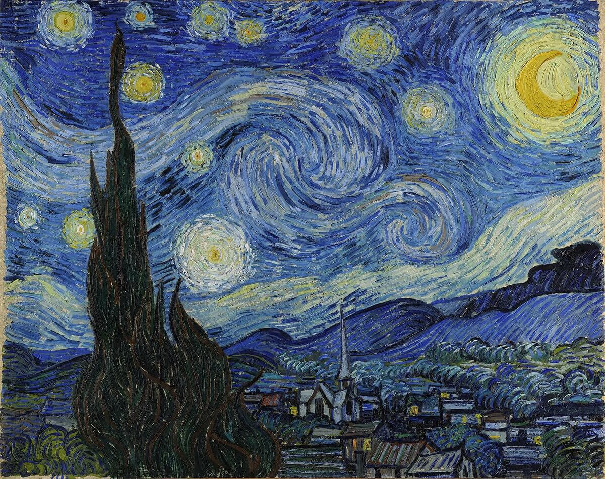
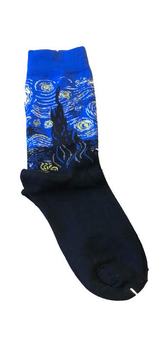

Mona Lisa
Konstnär:
Leonardo da Vinci
Skapad:
1503-1506
Porträttet av den förmögne köpmannen Francesco del Giocondos hustru har blivit da Vincis mest berömda målning. Hon är framförallt omtalad för hennes hemlighetsfulla leende. Konstverket har hängt i Louvren, Paris sedan den andra halvan av 1800-talet. Målningen blev däremot bestulen från Louvren år 1911 men återfanns redan efter 2 år.


The Old Guitarist
Konstnär:
Pablo Picasso
Skapad:
1903-1904
Konstverket återspeglar en gammal fattig man som böjer sig över sin gitarr medan han spelar på gatorna i Barcelona.
Konstverket hänger i Art Insttitute of Chicago som en del av Helen Birch Bartlett Memorial Collection.


Skriet
Konstnär:
Edvard Munch
Skapad:
1893-1910
Motivet Skriet har åerskapats fyra gånger av den norska konstnären. Konstverket föreställer en person som står på en bro över en fjord, samtidigt denne darrar av rädlsa.


The Starry Night
Konstnär:
Vincent Van Gogh
Skapad:
Juni 1889
Konstverket föreställer en virvlande natthimmel i Saint-Rémy, södra frankrike. Målningen hänger sedan 1941 i Museum of Modern Art i New York och anses vara en av Van Gogh's och världens mest berömda målningar.
